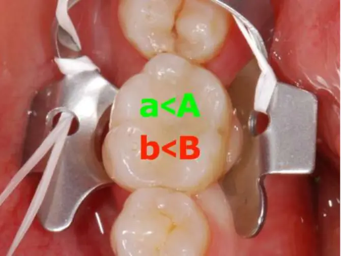
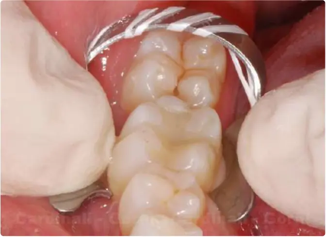

نسخه استخراجشده؛ ترجمه یا تأیید علمی انجام نشده است. وضعیت: captured
کلمپ را روی مولر اول پایین گذاشتهای. وقتی ورق را روی فریم میکشی، کلمپ ناگهان از دندان جدا میشود. از نمای باکال که نگاه میکنی، فقط یکی از دو نقطهی فک باکال با دندان تماس داشته است. پیش از ورق، چه چیزی را باید وارسی میکردی؟

قانون چهار نقطه: هر چهار نقطهی تماس کلمپ، دو نقطه در هر فک نزدیک لاینانگلهای مزیال و دیستال، باید همزمان روی دندان بنشینند. این مهمترین معیار انتخاب کلمپ است.
فقط نقطهها باید دندان را لمس کنند. اگر بخش دیگری از فک به دندان بخورد، نقطهها به هم نزدیک میشوند و کلمپ میچرخد یا میافتد. لازم نیست فک دقیق روی دندان جفت شود؛ سیل را ورق میسازد، نه کلمپ.
کلمپ را در حال استراحت (باز نشده) با دندان مقایسه کن:
انتخاب را معاینه تعیین میکند، نه برچسب کلمپ. اگر قانون چهار نقطه لازم دارد، کلمپ قدامی را روی پرمولر یا کلمپ پرمولر را روی مولر کوچک بگذار.
نیروی گیر کلمپ از کمان میآید و هرچه فکها بیشتر باز شوند، بیشتر است. اگر فاصلهی دو فک در حال استراحت تقریباً با قطر باکولینگوال دندان برابر باشد، کلمپ فقط وقتی دندان را میگیرد که کامل بسته شده؛ نیرویش کم است و با کشیدن ورق روی فریم میافتد، حتی اگر هر چهار نقطهاش روی دندان باشد.

همیشه اول کلمپ کمتهاجمیتر با فک صاف را امتحان کن و فقط اگر پایدار نشد، سراغ فک با شیب زیاد برو.
اشتباه رایج: فقط آزمون اول را انجام دادن. کلمپی که چهار نقطهاش روی دندان است ولی آزمون کشیدن کمان را نگذرانده، معمولاً همان لحظهای که ورق را روی فریم میکشی از دندان جدا میشود.